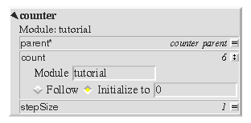
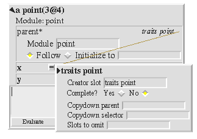

Specifying how to save the
contents of a slot
- Choosing what to file out for the contents of a slot requires the programmer©s intentions to be stated.
- An initialization expression can be supplied, to always perform a specific initialization, regardless of what the slot contains now.

- If the slot references an object created by another slot, a reference is filed out.

- If the slot contains a method, the source is stored.
- Special objects that have a storeString have that written out.
|
Specifying how to save the contents of a slot
When it comes to saving a slot's contents, there are several alternatives that the
transporter has to consider.
- Sometimes the programmer does not want to store the actual contents of a
slot, but instead wants to store something else. This intention is captured with
another annotation: a slot can be annotated `Initialize To Expression', and an
initializing expression supplied. This expression will be executed when the
slot is re-created. If a slot is annotated in this way, the transporter will not
search further down this path (this is one of the exceptions alluded to in the
previous slide).
- Even though the transporter is supposed to follow the slot, it may contain an
object that is created by another slot. For example, the parent slot in a point
should just refer to traits point rather than recreating the traits object. This
information is captured by the `Creator' annotation on each object that gives
the path from the lobby to the slot intended to create the object. In this case,
the transporter just files out a reference to the object's creator.
- If the slot contains a method, the source of the method is filed out.
- Some objects require special processing. Immutable objects (such as integers)
can just be written out as literals. Other objects can also be dealt with in this
way; for this they need to have a method, storeString, defined, which returns
a string to be written out which when evaluated will reconstruct the object.
For example, a point is written as 3@4.
- If none of the above apply, the transporter moves on to the object referenced
from the slot, and processes its slots in turn.
There is actually more to this issue than we have described, but most users of the
transporter will not need to know the full story. See the Self 4.0
Programming Environment Guide for more details.
|